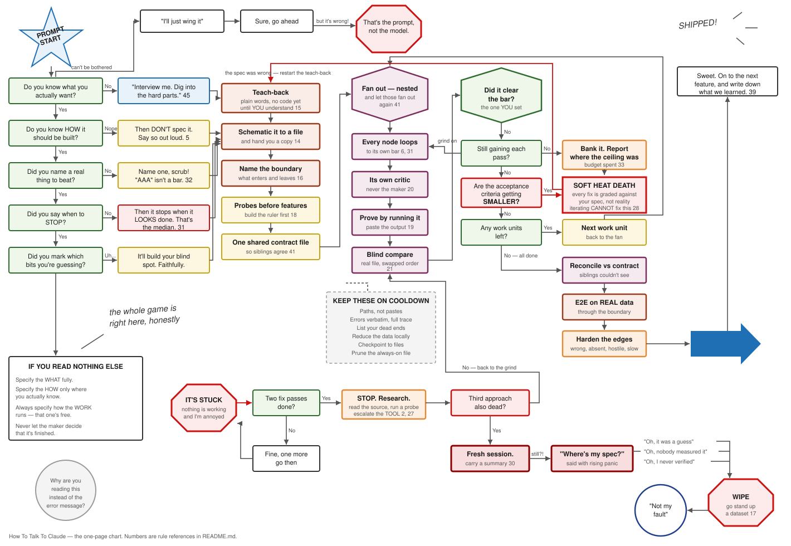

50 rules for getting real work out of an AI coding agent. They come from 80+ shipped projects, and each one says what to do, why it works, and what it sounds like when you say it. If a rule can't explain how it works, it's left out.
Four ways in, depending on what you need right now.
1,800 rules mined from LLM research papers, grouped into the seven control surfaces. Pan, zoom, search, and filter, all offline.
flowchartThe rules arranged by situation. Find the spot you're stuck in and use the move listed for it.
synthesisThe seven surfaces you actually control, checked against Anthropic's published guidance.
lifecycleIdea to shipped in nine phases, with the failure each phase prevents and the five feedback loops.
Every rule acts on one of these. Each one breaks in its own way if you leave it unmanaged.
The whole system on one sheet, colour-coded by function, with the failure cascade drawn in.

If you only read one thing.
Write all three parts: what you want and to what standard, how the work should run, and who decides when it's done. Be maximally prescriptive about the second (fan out, loop, verify), because that needs no domain expertise and the defaults are weak. Before it builds, make it map the system and explain the plan back until you understand it. Then take the grading away from the maker: a separate harsh critic, judging blind, against a real reference. State the stop condition as a loop-until, pair an unreachable bar with a budget, and say plainly that you'd rather see an ambitious failure than a safe median success.